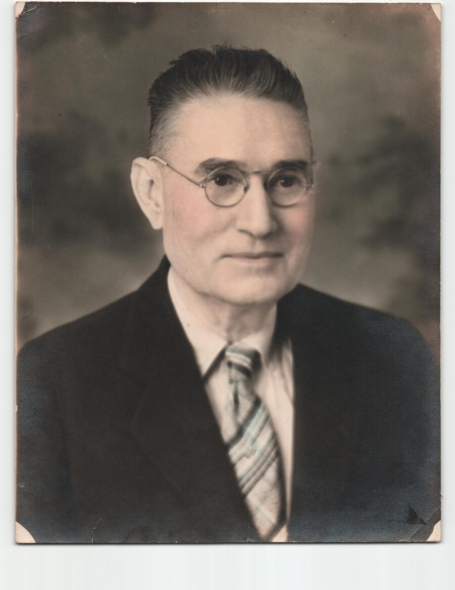

6 Aug 1875 – 26 Feb 1943 (per FS tree) · died 1943 (FACT, letters)
FACT Father’s side · Austin’s father

Relation: Father of Austin Hunley Winn. FACT (William) Full name Willis Hunley Winn — locks letter envelopes Mr. W. H. Winn / Mr & Mrs W. H. Winn, Route 2, Henning, Tennessee.
FACT Ill February 1943; died March 1943 (“daddy’s passing”). Spouse Fannie Lee (McBride) Winn (William; Mrs. W. H. Winn in letters). Parker 1978 and 1932 Cherry Willis mentions are secondary corroboration.
FACT His brothers and sisters are named in the 1932 obituary of his sister Mrs. Susan Winn Kinney — see Siblings. HYPOTHESIS (strong) Parents per the FamilySearch tree: William Hunley Winn (1812–1891) and Mary Evelyn Austin (1837–1908), married 3 Mar 1865, Tipton Co., TN — the FS tree’s children match the obituary’s siblings, and family oral history matches his father’s age at his birth. The obituary does not say which parent the Pitt half-siblings share.
Timeline
FACTName: Willis Hunley Winn (William); letter form W. H. Winn
HYPOTHESISBorn: 6 August 1875 (FS tree LDXR-VVJ, Low quality; refines the 1875 of the G95C-CBQ children list) — place NOT FOUND
FACTDied: 1943 — Mr. W. H. Winn of Route 2, Henning; the letters point to about March 1943 (ill February 1943; “daddy’s passing”)
HYPOTHESISDied: 26 February 1943 (FS tree LDXR-VVJ, Low quality)
DISCREPANCYDeath date: the letters’ context points to about March 1943; the FS tree says 26 Feb 1943. Awaits the Tennessee death certificate. (The Leader index entry of 4 Mar 1943, below, would fit a late-February death in a weekly paper.)
FACT (index)Covington Leader: “Winn, Willie H.” 4 Mar 1943 p.6 c.7 — 1943 Leader obit index
HYPOTHESIS (strong) Index “Willie H. Winn” = this Willis Hunley / W. H. Winn — need full Leader text + TN death cert to lock identity
FACTSpouse: Fannie Lee (McBride) Winn (b. 1894 Tipton) — her page
HYPOTHESISMarried:Fannie McBride, 11 January 1914, Lauderdale Co., TN (FS tree LDXR-VVJ, Low quality) — marriage record NOT FOUND
FACTChildren (William; order and dates per FS tree):
Mary Frances (Winn) Peyton — her page; husband John Peyton; HYPOTHESIS 1918–2007 per FS tree
Austin Hunley Winn (27 Feb 1921 – 16 Nov 1996) — his page
FACT Grandchildren via Mary Frances × John Peyton: John Winn, Joan Lee, Jim Willis — not Willis×Fannie children (William)
FACTBrother: W. P. Winn of Cherry (1932 Covington Leader obituary of Susan Winn Kinney). HYPOTHESIS (strong) W. P. = the “Uncle Bill” of the Parker memoir and Austin’s letters
FACTStore: kept a country store at Green’s Chapel Methodist Church with his brother “Uncle Bill” (Parker memoir, 1978); the letters confirm the store (1943: “700 at 800 for the stock”)
FACTLand, 1926: “W.H. Winn et ux et al to T.F. Woodruff, 25 15/100 acres in 10th district, $2920” (Lauderdale County Enterprise deed transfers, 1926). HYPOTHESIS “et al” may mean land held jointly with siblings or co-heirs
HYPOTHESIS (strong)Parents: father William Hunley Winn (6 Apr 1812 – 27 Jul 1891) and mother Mary Evelyn Austin (1837–1908), married 3 Mar 1865, Tipton Co., TN (FamilySearch Family Tree G95C-CBQ, LDB3-M88). Supported by three things: the FS tree, the sibling match in the 1932 Kinney obituary, and family oral history
FACTFamily oral history (William LaVaughan Winn, 27 Sep 2026): William’s grandmother told him Willis’s father was about 63 when Willis was born — this matches the FS tree (William Hunley Winn b. 1812; Willis b. 1875)
HYPOTHESISPitt half-siblings, not confirmed: J. H. Pitt and Mrs. S. T. Leatherwood may have been Mary Evelyn Austin’s children by an earlier Pitt marriage. Willis also had older paternal half-siblings per the FS tree (Sarah Jane, Iva Ann, Lucy, Thomas) — see William Hunley Winn’s page
HYPOTHESISGiven names: his son Austin Hunley Winn’s given names match Willis’s parents’ names — Austin (Mary Evelyn’s maiden name) and Hunley (William Hunley Winn). An inference, not a stated fact
FACTREFUTED: Civil War Willis Hunley Winn (1832–1881 Montgomery Co.) is not this man — possible namesake only
FACTNEGATIVE: No Winn in Lauderdale FH abstracts Mar 1943 — death cert still desired
need-more Full Leader obit text; TN death cert (still pending — would settle 26 Feb vs March 1943 — should name his father and his mother’s maiden name, to test the FS-tree parents); burial / FaG; exact birth date
Siblings
FACT Covington Leader, 31 Mar 1932, p.8 c.2, “WAS BURIED HERE FRIDAY” — obituary of Mrs. Susan Winn Kinney, naming her brothers Willis and W. P. Winn (both of Cherry), her sisters, and a half-sister and half-brother.
FACTSusan (Winn) Kinney (d. Mar 1932; HYPOTHESIS (strong) FS tree: Mary Sue Winn, 1878–1932) — wife of G. D. Kinney of Memphis, formerly of the Bride vicinity; died at home in Memphis after a two-week illness; funeral by Maley’s; buried Munford Cemetery, Covington. Sons Alec and Harvey Kinney of Memphis. FACT A Harvey Kinney wrote to Austin in 1944–45 (letters, Feb 1944)
FACTW. P. Winn, of Cherry — HYPOTHESIS (strong) FS tree: William Peter Winn (1870–1937); Leader index “Winn, William P.”, 9 Dec 1937
FACTMrs. Casper Wiseman (née Winn), of Osceola, Ark. — HYPOTHESIS probably Sarah Eveline Winn (1866–1953) or C. B. Winn (b. 1872) of the FS tree; not assigned
FACTMiss Willie Winn, of Memphis — HYPOTHESIS (strong) FS tree: Willie Mae Winn (1869–1935); Leader index “Winn, Miss Willie May”, 14 Mar 1935
FACTHalf-sister: Mrs. S. T. Leatherwood (née Pitt), of West Point, Miss. — HYPOTHESIS possibly Mary Evelyn Austin’s daughter by an earlier Pitt marriage (not confirmed)
FACTHalf-brother: J. H. Pitt, of Little Rock, Ark. — HYPOTHESIS possibly Mary Evelyn Austin’s son by an earlier Pitt marriage (not confirmed)
HYPOTHESIS (strong)FS tree children of William Hunley Winn and Mary Evelyn Austin (full list): Sarah Eveline (1866–1953), Willie Mae (1869–1935), William Peter (1870–1937), C. B. (female, b. 1872), Willis Hunley (1875–1943), Mary Sue (1878–1932). The matches to the obituary names are by name and dates only.
Research leads (not on the tree)
These are leads only. (Willis’s parents per the FS tree are now on the tree as dashed boxes — see Timeline.)
HYPOTHESISCovington Leader obituary index entries (index only; texts not read): “Winn, William P.”, 9 Dec 1937, p.2 c.4 (W. P.?); “Winn, Miss Willie May”, 14 Mar 1935, p.8 c.4 (Miss Willie?); “Pitt, Mr. J. Harvey”, 27 Dec 1934, p.2 c.6 (J. H. Pitt? — Susan named a son Harvey); “Kinney, Gerald D.”, 27 Apr 1939, p.12 c.2 (G. D. Kinney?); “Kinney, David Alexander”, 23 May 1935, p.13 c.4 (son Alec?)
HYPOTHESISSimon Peter Driver (27 Nov 1842 – 6 Feb 1930) of Cherry — a close Winn relative, exact relationship unproven:
FACT Munford Cemetery, Covington — stone “Driver, Simon Peter 11-27-1842 / 02-06-1930” (the same cemetery as Susan Winn Kinney)
FACT 1930 Lauderdale death certificate no. 6259 (abstract): died 6 Feb 1930, civil district 13 (Cherry area), widowed, brickmason; father “unk”; mother “WINN”, born TN; informant W.P. WINN, Cherry, TN
FACT Fort Pillow State Historic Park portrait placard: “Simon Peter Driver 1842-1930 / 7th TN Calvary, Co. B under N. B. Forrest 1863-1865 / Resident of Cherry, TN / Donated by Jim Peyton, Ancestor of Simon Peter Driver” (Austin’s sister Mary Frances married John Peyton)
FACT Austin’s letter, Jul 1943: “Are those green glasses that Uncle Peter used to wear still at the store?” — and letters from Wilbur Driver of Fresno, CA (“Cousin Wilbur”), Sep 1943 – Dec 1944
FACT (index) Covington Leader index: “Driver, Mr. S. P.”, 13 Feb 1930, p.7 c.3 (obituary text not read)
HYPOTHESIS Two readings fit: Willis’s mother was a Driver (Simon Peter her father or brother), or Driver was kin through a Winn mother, as the certificate abstract literally reads. Neither is proven; the certificate image and the 1930 obituary would test it
Sources & references
FACT William — Willis Hunley Winn; children Austin and Mary Frances (Winn) Peyton (husband John Peyton). niece/nephew generation via Mary Frances: John Winn, Joan Lee, Jim Willis (not Willis×Fannie children)
FACT Letters willwinn.xyz 194301–194303 — Mr. W. H. Winn, Rte 2 Henning; death Mar 1943
FACT Crystal’s paternal research report (27 Sep 2026)
HYPOTHESIS FamilySearch Family Tree, profile LDXR-VVJ (Willis Hunley Winn; 18 sources, rated Low quality; user-editable) — https://www.familysearch.org/tree/person/details/LDXR-VVJ — b. 6 Aug 1875; d. 26 Feb 1943; m. Fannie McBride 11 Jan 1914, Lauderdale Co., TN; children William Lenard, Mary Frances, Austin Hunley
FACT Crystal’s Willis Hunley Winn batch from FamilySearch Family Tree LDXR-VVJ (27 Sep 2026)